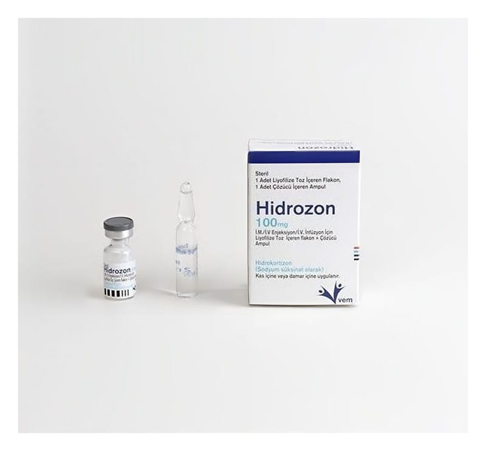

Hidrozon 100 mg IM/IV Enjeksiyon/IV İnfüzyon İçin Liyofilize Toz İçeren Flakon+çözücü Ampül ,1 Adet

Ne için kullanılır
KT · Bölüm 1HİDROZON hastanede uzmanlaşmış tıbbi personel tarafından kullanılması gereken bir ilaçtır. HİDROZON, 1 adet renksiz tip I cam flakon (liyofilize tozu içerir) ve 2 ml steril enjeksiyonluk su içeren tip I renksiz cam ampulden oluşmaktadır. Her bir flakon etkin madde olarak bir kortikosteroid olan hidrokortizon sodyum süksinat içerir. Kortikosteroidler vücudunuzda doğal olarak üretilir ve birçok vücut fonksiyonu için önemlidir.
Bu ilacı kullanmaya başlamadan önce KULLANMA TALİMATINI dikkatlice okuyunuz, çünkü sizin için önemli bilgiler içermektedir. Bu kullanma talimatını saklayınız. Daha sonra tekrar okumaya ihtiyaç duyabilirsiniz. Eğer ilave sorularınız olursa, lütfen doktorunuza veya eczacınıza danışınız. Bu ilaç kişisel olarak sizin için reçete edilmiştir, başkalarına vermeyiniz. Bu ilacın kullanımı sırasında doktora veya hastaneye gittiğinizde bu ilacı kullandığınızı doktorunuza söyleyiniz. Bu talimatta yazılanlara aynen uyunuz. İlaç hakkında size önerilen dozun dışında yüksek veya düşük doz kullanmayınız.
HİDROZON aşağıdaki durumlarda kullanılır; - Böbrek üstü bezlerinizdeki problemlere bağlı olarak vücudunuzun yeterli kortikosteroid üretmemesi durumunda (primer veya sekonder adrenokortikal yetmezlik), - Crohn hastalığı (bağırsak iltihabı) veya ülseratif kolit (alt bağırsak iltihabı) gibi sindirim sistemi rahatsızlıklarında, - Bronşiyal astım ve anafilaktik reaksiyonlarda - Mide içeriğinin aspirasyonunda, - Stevens-Johnson sendromunda (deride kabarcıklara ve soyulmalara neden olan bir bağışıklık sistemi rahatsızlığı) veya Sistemik lupus eritematoz (deride özellikle yüzde kelebek tarzı kızarıklar şekline oluşan bir bağışıklık sistemi rahatsızlığı) tedavisinde, - Adrenokortikal yetmezliğe sekonder şok tedavisinde veya adrenokortikal yetmezlik (böbrek üstü bezlerinizdeki problemlere bağlı olarak vücudunuzun yeterli kortikosteroid üretmemesi) mevcut olduğunda klasik tedaviye yanıt vermeyen şok tedavisinde kullanılır.